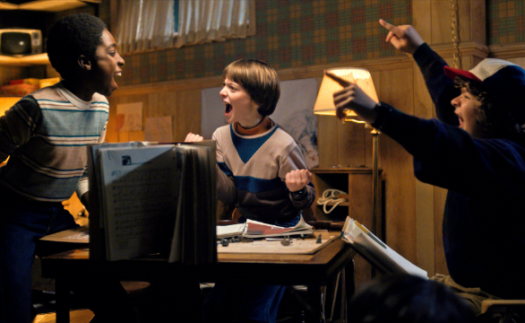
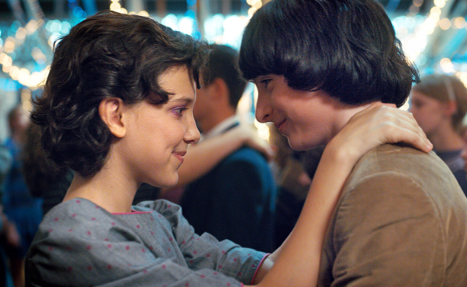
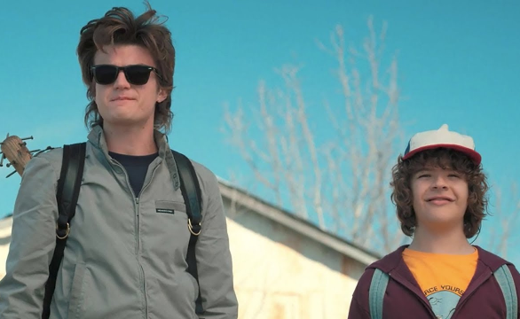

Galería

La desaparición de Will Byers
Capítulo 1, Temporada 1

El portal
Capítulo 9, Temporada 2

El espía
Capítulo 6, Temporada 2

El otro lado
Capítulo 8, Temporada 1

Dulce o truco, bicho raro
Capítulo 2, Temporada 2

El renacuajo
Capítulo 8, Temporada 1